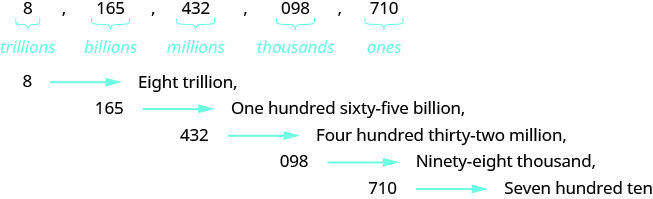

B004 source and localized diagrams
fs-id1227744
Unchanged source

New bilingual redraw; scroll to inspect every group.
fs-id1209906
Unchanged source

New bilingual redraw; scroll to inspect every group.
fs-id2670483
Unchanged source

New bilingual redraw; scroll to inspect every group.